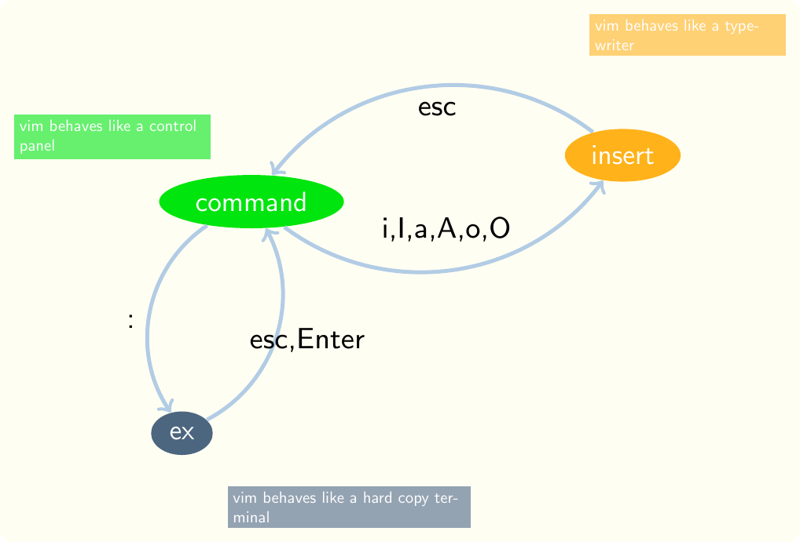

17 Vim, a text editor
under construction
The best starting point for vim is the vimtutor, which is automatically installed when you install any version of vim. Simply say vimtutor at the bash prompt and you will automatically enter a disposable copy of the vimtutor. You can edit the file you’re in without disturbing the original vimtutor. So, if you have problems, you can always exit the vimtutor, for example by saying :q! without damaging the original file, then open it again by saying vimtutor again at the bash prompt.
Another common starting point for vim is the maze game vim adventures. Be aware, though, that if you have Tridactyl loaded in your browser, you must temporarily disable it by, for instance, saying shift+esc.
17.1 Basic Vim ideas
First, consider that when this editor was developed, computers were slow and displays had just entered common use. Most of the editing tools that existed already were editors such as ed, the editor, and ex, the extended editor, that were designed to help programmers work at what were called hard copy terminals. These were essentially printers connected to keyboards. The programmer had to have a very clear mental picture of what was going on because there were almost no visual aids. Imagine typing your program into a computer where you have no display at all. It should sound like a painful activity requiring a lot of concentration and the construction and maintenance of a clear mental picture.
It may seem counterintuitive to use tools designed for such a primitive environment. The purpose is, in part, to encourage you to form a mental picture but there is more to it than that. We’ll discuss some of these issues later but for now, you should understand the concept of the editor functioning in a highly constrained environment where the programmer’s mind is supplying quite a bit of what would today be supplied by graphical supports.
The above figure shows the three basic Vim modes. Several programming editors have the concept of modes, so that each key can perform multiple functions depending on which mode is currently active.
17.2 Command mode
This is the mode you should usually use to navigate program files. You should only emerge from this mode to type text or enter an ex command. In this mode Vim resembles a control panel, with each key executing a command. You can always reach command mode by pressing escape if you are in one of the other modes.
17.3 Insert mode
When you want to type some code into a file, switch to insert mode. The command you use to do so depends on where your cursor is relative to where you want to enter text. The most common commands to enter insert mode are
- i, insert before the cursor position
- I, insert at the beginning of the current line
- a, insert after the cursor position
- A, insert after everything currently on the line
- o, open a new line below the cursor and insert
- O, open a new line above the cursor and insert
While you are in insert mode, Vim behaves somewhat like a typewriter. Pretty much every character you type is written to the file. There are a few shortcut keys but you are expected mostly to switch back to command mode to navigate or perform other activities.
17.4 Ex mode
You enter ex mode by typing a colon (:). That causes the colon to appear in the lower left corner of the window, where you can enter an ex command. These ex commands are mostly line-oriented commands. That means that they act on entire lines of text. For example, the global command, usually abbreviated as g, performs a specified action on every line matching a given pattern.
17.5 Vim concepts
Some of the concepts for this editor that apply to all programmer’s editors are as follows. Where the concept is preceded by a colon, it is also an ex command.
:splitA programmer’s text editor must have many ways to split windows so that you can view another file or another part of the same file while editing. There’s a basicsplitcommand in Vim and many parameters it can be given and many ways to bind it to shortcut keys to fit your habits.:vsplitIn addition to a split that draws a horizontal line across the window, an editor needs a way to split the window the other way, drawing a vertical line down the window. Thevsplitcommand is the basic command to do that in Vim.- folding A programmer’s text editor must have a way to hide some of the text to show the structure of a file or other attributes of a file that help to provide an overview. Folding is the generic term for hiding part of a file. It is based on the metaphor of folding a piece of paper so only part of the text can be seen. For example, suppose you have a file with several methods. You might fold it so that only the header of each is visible. You would also want folding to understand the syntax of the language in which you are writing text. For example, this file is written using Markdown. The basic folding commands recognize this and will automatically fold according to the Markdown headline syntax.
:substituteA text editor needs extensive support for regular expressions, both for searching and replacing text. The regular expressions should provide greater flexibility than mere literal text, and should support patterns in both search and replacement strings. These should work on individual lines, ranges of lines, or an entire file.:globalA text editor should support more than search and replace on regular expressions. It should be possible to perform some specified action on every line matching a pattern. The Vimglobalcommand provides this capability.- syntax highlighting A text editor should offer flexible syntax highlighting that you can customize. Some popular syntax highlighting schemes like Solarized are available for a variety of editors and terminal windows.
- hex edit There should be a way to represent files in hexadecimal for specialized editing tasks. There is not such a facility built into Vim but it can be added easily. In fact, for any commonly used facility not built into Vim, you should search for an extension.
- dbext For the database courses, you may want to use the
dbextextension to support writing statements and passing them to MySQL or whatever dbms you are using. Most popular interpreted languages have extensions to support passing fragments of text in a file to an intrepreter, simplifying the task of keeping an audit trail of activitites. :vimdiffThe most basic utility for identifying differences between files, as well as for automating the patching of program files, is the utilitydiff. A text editor should have the functionality ofdiffbuilt in, preferably in a way that is easy to learn and use, most often through compatibility withdiff.
Some specific examples of commands for this editor follow.
17.5.1 Motion
Most of the motion commands are only useful if you do them often enough that they become automatic. If you have to think of them, you may as well reach for a mouse.
0 Go to the beginning of the cursor’s line.
$ Go to the end of the cursor’s line.
w Go to the beginning of the next word. e Go to the end of the next word.
ctrl-f Forward a screenful.
ctrl-b Backward a screenful.
17.5.2 Get into insert mode but first delete something
Often you need to replace something with something of a different length. You don’t want to have to think about the length of the new thing, just identify the thing being replaced and start typing the new thing.
c change motion characters, where motion is a motion command. For instance cl deletes one character to the right, whereas ch deletes one character to the left.
cc change current line—delete the current line before entering insert mode.
C change current line—delete the current line before entering insert mode.
s substitute character or count characters if you give count first; for instance, 1s is the same as s and 2s deletes two chars before entering insert mode
S substitute current line
17.5.3 Just delete without changing mode
x delete the character under the cursor
X delete the character to the left of the cursor
d delete motion characters
dd delete current line
D delete current line
17.5.4 Various
Here are various commands without a unifying category.
u undo
ctrl-r redo
:s/pattern/repl/g The s in this command stands for substitute and it is an exceptionally powerful command. The pattern can be any valid regular expression pattern and the replacement can include pieces of the matched pattern—even if you don’t know the exact characters matched. For example, suppose you have a file of lines that look like this.
Name: Moe Howard Email: moe@aol.com Description: leader of the threeSuppose you would like to save just the email addresses. You could use a command like the following to eliminate everything except the email addresses.
:s/.*Email: \(.*\) Description:.*/\1This command isolates the characters between email and description using a device called escaped parentheses. These are parentheses preceded by backslashes. Every pair of escaped parentheses is implicitly assigned a number and can be reproduced in repl by giving the number, preceded by a backslash.
:g/pattern/command
~ Toggle capitalization of the current char.
. Repeat the last command. (Does not repeat everything you just did while in insert mode—there is a separate command for that.)
/pattern Find pattern, which may be literal or a regular expression.
/pattern/e Find pattern and put cursor at the end of the match.
n find next occurrence of pattern after saying /pattern
fx find char x on current line
; find next x after fx